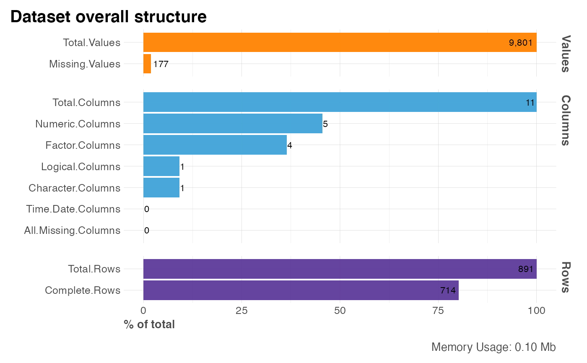

This function lets the user to check quickly the structure of a dataset (data.frame). It returns multiple counters for useful metrics, a plot, and a list of column names for each of the column metrics.
Arguments
- df
Dataframe
- return
Character. Return "skimr" for skim report, "numbers" for stats and numbers, "names" for a list with the column names of each of the class types, "plot" for a nice plot with "numbers" output, "distr" for an overall summary plot showing categorical, numeric, and missing values by using
plot_dfdistributions- subtitle
Character. Add subtitle to plot
- quiet
Boolean. Keep quiet or show other options available?
Value
Depending on return input and based on your df structure:
listwith the names of the columns classified by classdata.framewith numbers: total values, row, columns, complete rowsplotwith visualizations
See also
Other Exploratory:
corr_cross(),
corr_var(),
crosstab(),
distr(),
freqs_df(),
freqs_list(),
freqs_plot(),
freqs(),
lasso_vars(),
missingness(),
plot_cats(),
plot_df(),
plot_nums(),
tree_var()
Examples
Sys.unsetenv("LARES_FONT") # Temporal
data(dft) # Titanic dataset
df_str(dft, "names")
#> Other available 'return' options: 'skimr', 'numbers', 'distr', 'plot'
#> $cols
#> [1] "PassengerId" "Survived" "Pclass" "Sex" "Age"
#> [6] "SibSp" "Parch" "Ticket" "Fare" "Cabin"
#> [11] "Embarked"
#>
#> $nums
#> [1] "PassengerId" "Age" "SibSp" "Parch" "Fare"
#>
#> $char
#> [1] "Ticket"
#>
#> $factor
#> [1] "Pclass" "Sex" "Cabin" "Embarked"
#>
#> $logic
#> [1] "Survived"
#>
#> $time
#> character(0)
#>
#> $allnas
#> character(0)
#>
df_str(dft, "numbers", quiet = TRUE)
#> metric counter p
#> Total.Values Total.Values 9801 100.00
#> Total.Rows Total.Rows 891 100.00
#> Total.Columns Total.Columns 11 100.00
#> Numeric.Columns Numeric.Columns 5 45.45
#> Character.Columns Character.Columns 1 9.09
#> Factor.Columns Factor.Columns 4 36.36
#> Logical.Columns Logical.Columns 1 9.09
#> Time.Date.Columns Time.Date.Columns 0 0.00
#> All.Missing.Columns All.Missing.Columns 0 0.00
#> Missing.Values Missing.Values 177 1.81
#> Complete.Rows Complete.Rows 714 80.13
#> Memory.Usage Memory.Usage 103448 1055.48
df_str(dft, "plot", quiet = TRUE)
